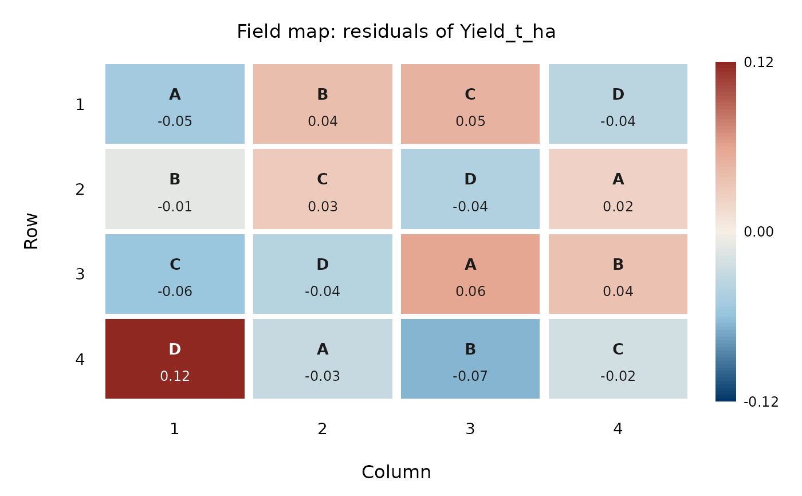

Draws the plots of the trial on their field rows and columns, coloured by the response or by the residuals of the model (a diverging scale centred at zero), and labelled with the treatment. Spatial patterns of the residuals point to fertility gradients that blocking did not remove.
Usage
plot_field(
fit,
row = NULL,
col = NULL,
data = NULL,
value = c("response", "residuals"),
labels = TRUE,
values = TRUE,
digits = 2,
main = NULL
)Arguments
- fit
An
"ad_anova"object fromdesign_anova().- row, col
Names of the field row and column columns. By default the row and column of a Latin square.
- data
The data frame given to
design_anova(), needed when the field row and column were not roles of the design.- value
"response"or"residuals".- labels
Write the treatment of each plot.
- values
Write the value of each plot.
- digits
Decimals of the values.
- main
Title.
Examples
fit <- design_anova(wheat_latin, "Yield_t_ha", "Treatment", row = "Row", col = "Column")
plot_field(fit, value = "residuals")
